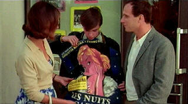

|
Bridge, The/ B, B- |
|
Fox Lorber/1999/92/ANA 1.85 |
Director Frédéric Auburtin captures small town
rural France in the early sixties with perceptive vision. The Bridge
takes place at a social crossroads bridging post war innocence to a period
when the breakdown of traditional social systems is beginning. The film
doesn't try to condemn the changes, but shows them more as inevitable. The
solid domestic drama plants a fairly typical French family squarely in the
throws of crisis when people are more susceptible to temptation. The French
are very good at these slice of life films.
 |
| It all
starts at the movies. ©Fox Lorber |
It's a very sad movie. Georges, the cuckolded
husband, is an extremely
likeable character. His wife Mina is essentially an innocent. She can't help herself. Her affair is like
a force of nature. Still, innocent or not, you can't help but condemn Mina.
On the other hand, Matthias, the bridge engineer who Mina meets at the
movies, is an extremely selfish
character. Though he might be appealing to Mina, he is only interested in
himself. Mina is quite an ordinary women. When she sees Matthias crying at a
movie, she is attracted. His open emotions struck a receptive chord in her.
The message is that woman are aroused by sensitivity in men. But Mina is a
lost soul in the confusing forest of her emotions.
It's a touching moment to see the flush on Mina's cheeks when
she descends the stairs at the Daboval house and meets Claire. Georges
relationship with the local barmaid adds a layer of unrealized sub-text. The
innocent romance of Georges and Mina's son Tommy and Lisbeth Daboval is
an effective accompaniment to the main plot line.
Depardieu is wonderful as Georges. In his big scene with Mina, he
pulls at your heartstrings with under-acting. He is physically powerfully
overbearing, but he is a very sensitive man. Carol Bouquet is perfectly cast
as Mina. She's pretty, yet ordinary. She wears her emotions as naturally as
the 1960s dresses. Charles Berling's confident Matthias is another excellent
performance.
A lot of energetic fifties era music is naturally
incorporated into the script, adding a important level of period flavor to
the film. Auburtin gives the script by François Dupeyron a flow as natural
as rushing water under a bridge.
Clearly, The Bridge could have looked better with
a more controlled transfer. Black level was too high and after adjusting it the overall
transfer looked quite nice. Sharp images with decent color saturation. It's
very clean. Surround sound is good and open with reasonable directionality.
A couple of scenes are slightly soft, but it's minor. The slatted shutter on
the Daboval house are rife with jutter artifacts. Yellow English removable
subtitles are clear and easy to read. The final scene at the water is a
horrible jittery mess. Happily, it is not representative of the transfer.
Reviewed on a Sharp 9000VX DLP Projector |
|
|
|

 Have you visited
Home Theater Talk
lately? One of the friendliest places on the Net for Home Theater and DVD
discussion, you can get help for installation problems or simply share your
opinions with other Vidiots. Have you visited
Home Theater Talk
lately? One of the friendliest places on the Net for Home Theater and DVD
discussion, you can get help for installation problems or simply share your
opinions with other Vidiots.

Glenn Erickson's insightful DVD reviews have been a Internet fixture for
several years. Check out some of his sophisticated feature articles.
Currently hosted by DVD Talk.

List
Your DVD
Reader DVD Reviews and base DVD information. You can also submit
a list of your favorite DVDs.

Jou Du/A,B-

A sexy Chinese noir. Bold colors paint stirring emotions in a small
provincial town.
Looking
for a good Foreign Film Fix? Here's a list of reviews that can get you
started on an overdose. Click here to satisfy the urge.

|